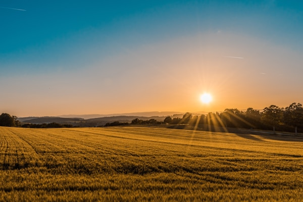
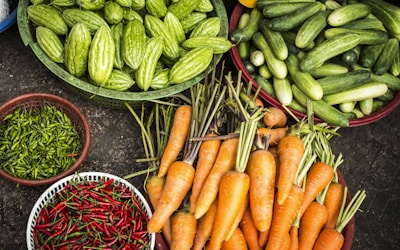

Conectando Pessoas à Natureza
Descubra o encanto do campo brasileiro através de experiências sustentáveis que unem lazer, educação ambiental e valorização da cultura rural.
O turismo rural e o agroturismo ecológico são modalidades de turismo que aproximam as pessoas da natureza, da cultura local e das atividades realizadas no campo. Em um mundo cada vez mais urbanizado, muitas pessoas procuram experiências que proporcionem contato com o meio ambiente, tranquilidade e aprendizado sobre a produção de alimentos.
Além de oferecer lazer aos visitantes, essas atividades ajudam a gerar renda para as famílias rurais e incentivam a preservação dos recursos naturais. Dessa forma, o turismo rural sustentável se torna uma importante ferramenta para promover o desenvolvimento econômico sem comprometer o meio ambiente.
Conheça os Benefícios
Engloba diversas atividades realizadas no meio rural, como hospedagem em fazendas, gastronomia típica, passeios a cavalo, trilhas ecológicas, visitas a plantações e participação em festas tradicionais.
Modalidade mais específica na qual os visitantes participam diretamente das atividades agrícolas: colher frutas, acompanhar a produção de alimentos, conhecer animais e aprender sobre o trabalho dos agricultores.
A principal característica do agroturismo ecológico é a preocupação com a sustentabilidade. As propriedades buscam preservar a natureza, valorizar a cultura local e utilizar os recursos naturais de forma responsável.
O agroturismo ecológico gera impactos positivos em diversas dimensões, promovendo um ciclo virtuoso de preservação e desenvolvimento.
Incentiva a conservação das áreas naturais, pois a paisagem, as florestas, os rios e a biodiversidade tornam-se atrativos turísticos. Os proprietários rurais passam a ter mais motivos para preservar o meio ambiente.
Contribui para a educação ambiental dos visitantes. Ao conhecerem de perto os processos de produção agrícola e a importância da conservação dos recursos naturais, os turistas desenvolvem maior consciência ambiental.
Gera renda complementar para agricultores familiares. O turismo ajuda a diversificar as fontes de renda das propriedades, reduzindo a dependência exclusiva da produção agrícola e fortalecendo a economia local.
Preserva e valoriza tradições, costumes e saberes locais. As comunidades rurais mantêm vivas suas práticas culturais ao compartilhá-las com os visitantes, fortalecendo sua identidade.
As propriedades que trabalham com agroturismo sustentável oferecem diversas atividades que aproximam os visitantes da natureza e da cultura rural.
Caminhadas em meio à natureza com guias especializados
Avistamento de animais silvestres e aves em seu habitat
Experiência de colher frutas e hortaliças frescas
Cavalgadas por trilhas e paisagens rurais
Conhecer plantações orgânicas e estufas
Fazer queijos, doces, pães e conservas
Hospedagem em meio à natureza
Programas educativos para estudantes
Aprender técnicas de agricultura sustentável
Planeje sua próxima aventura no campo e reconecte-se com a natureza
Planeje sua Experiência RuralApesar do crescimento do turismo rural, alguns desafios ainda precisam ser superados. Muitas propriedades necessitam investir em infraestrutura, hospedagem, acessibilidade e capacitação dos proprietários para receber turistas. Também é importante garantir que o aumento do número de visitantes não provoque impactos negativos ao meio ambiente.
A tendência é que o turismo rural sustentável continue crescendo, impulsionado pela busca por experiências autênticas, pelo interesse na alimentação saudável e pela valorização da preservação ambiental. Muitas propriedades já investem em energia solar, reciclagem, reaproveitamento de água e produção orgânica.

Propriedades autossuficientes em energia limpa
Sistemas de captação e reutilização
Alimentos sem agrotóxicos
Zero resíduos nas propriedades
Fique por dentro das últimas novidades sobre turismo rural, agroturismo e sustentabilidade no Brasil e no mundo.
O turismo rural e o agroturismo ecológico representam uma alternativa sustentável que beneficia tanto os visitantes quanto as comunidades rurais. Essas atividades promovem a preservação ambiental, valorizam a cultura local, geram renda para os produtores e ajudam a conscientizar a população sobre a importância dos recursos naturais.
Ao unir lazer, educação ambiental e desenvolvimento econômico, o agroturismo ecológico demonstra que é possível utilizar o meio rural de forma sustentável, contribuindo para um futuro mais equilibrado entre produção, turismo e preservação da natureza.
"O verdadeiro progresso é aquele que coloca a tecnologia ao alcance de todos sem destruir a natureza."
Interessado em saber mais sobre turismo rural e agroturismo ecológico? Entre em contato conosco ou assine nossa newsletter para receber as melhores dicas e novidades.